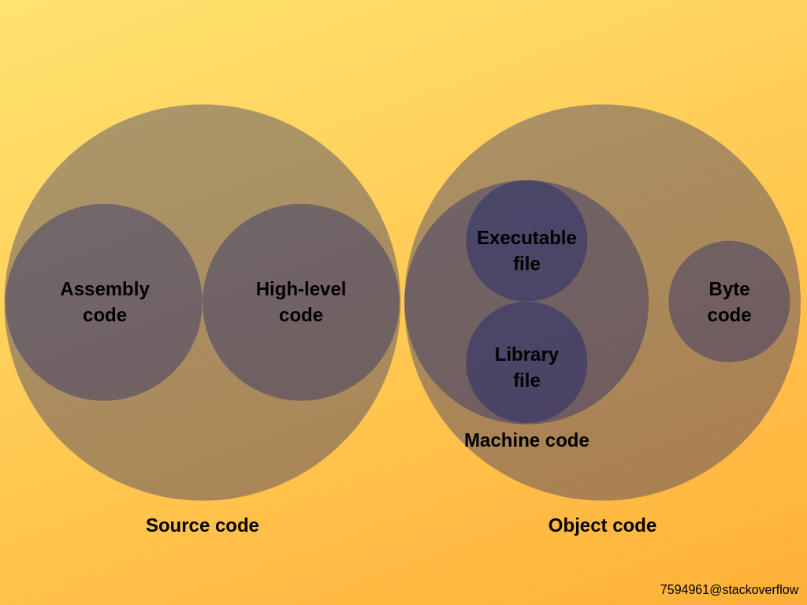

home
Concept of Source code, Assembly code, object code and Machine code

- Source code :Source code is the fundamental component of a computer program that is created by a programmer, often written in the form of functions, descriptions, definitions, calls, methods and other operational statements. It is designed to be human-readable and formatted in a way that developers and other users can understand.
- Assembly code :Assembly Language is a low-level language that helps to communicate directly with computer hardware. It uses mnemonics to represent the operations that a processor has to do. Which is an intermediate language between high-level languages like C and the binary language. It uses hexadecimal and binary values, and it is readable by humans.
- Object Code: Object code is the machine-readable code that is generated by the compiler, and it serves as an intermediate step between the source code and the final executable code.
- Machine Language: Machine language is a low-level programming language that consists of binary bits i.e. only 0 and 1. The data present in binary form is the reason for its fast execution. In Machine language, instructions are directly executed by the CPU. Machine language is also known as object code or machine code. Machine language is binary language.